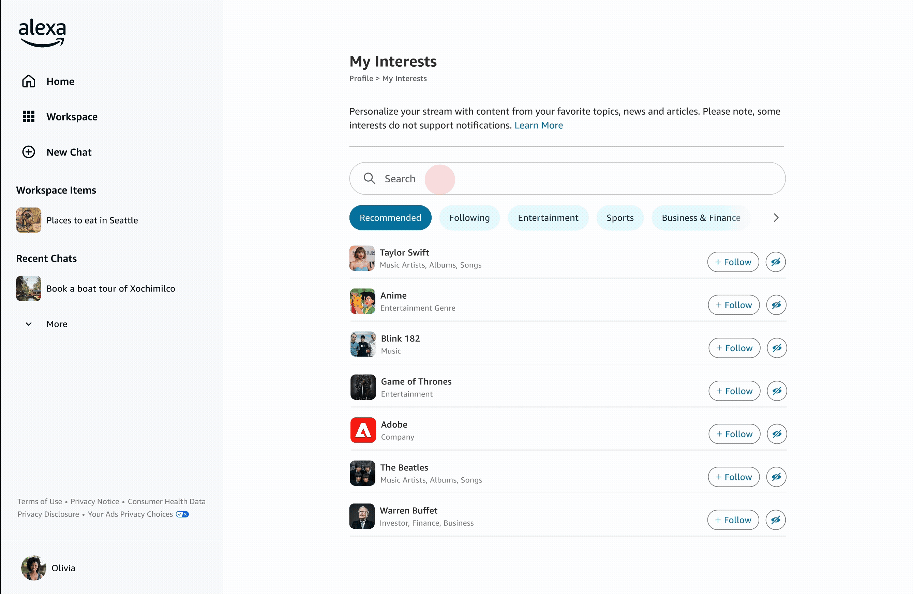

Design Prototypes
Personalized Homepage Feed
Highly personalized dedicated homepage that tailors users' experience with Alexa+ - Mixes sponsored placements, editorial suggestions, and reactive follow-ups ("Because you asked me about this topic") with location-aware and behavior-based content like local news and restaurant bookings

Memory & Interests
A personalization engine that learns from what users directly tell it (added interests, settings, feedback) and what they do (clicks, shares, chat history), then reflects that understanding back inline within the conversation and a dedicated interest settings page
Natural Language Interests
Ability to add interests in plain language ("TV shows that use satire") instead of picking specific topics ("John Oliver", "The Simpsons" etc)

First-Time User Experience and Account Setup
Multiple profiles and separate user onboarding so that users can jump right in and start chatting with Alexa